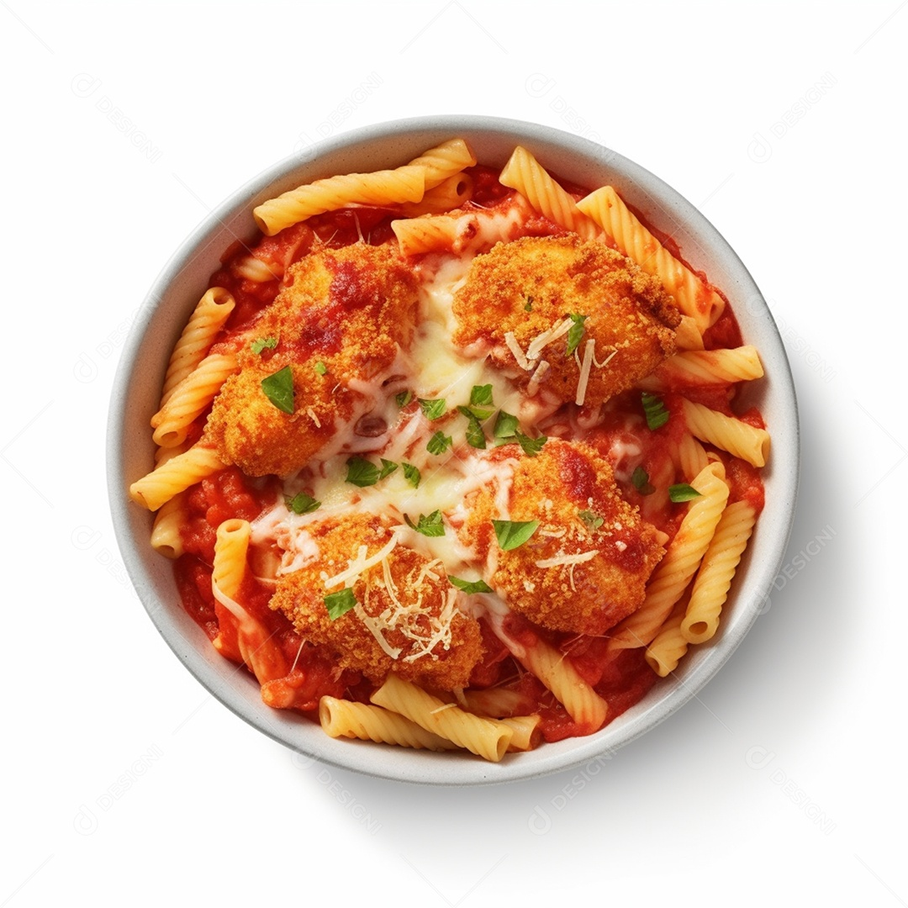

Morar Sozinho
Início
Receitas
Tutoriais
Info
Contato
Entrar
Início
Receitas
Tutoriais
Info
Contato
Entrar

Frango a parmegiana
Saboroso e barato.
(10+)
Ver Mais
Ingredientes:
1kg de filé de peito de frango
1 sachê de molho de tomate
1 xicara de farinha de trigo
1 xicara de farinha panko ou de rosca.
2 ovos
1 cebola média picada
2 dentes de alho picados
Óleo
Sal a gosto
Temperos de sua preferencia
1/2 Tomate picado
1/2 pimentão picado
250g de mussarela fatiada
Modo de Preparo:
Tempere os filés de peito de frango e reserve.
Em uma panela, coloque a cebola e o alho para dourar em 1 fio de óleo.
Quando a cebola e o alho dourar, coloque o tomate, o pimentão e os temperos de sua preferencia.
Logo após o passo anterior, coloque o molho de tomate, deixe cozinhando por 5 minutos, desligue e reserve.
Quebre os 2 ovos em um prato, coloque sal e temperos a gosto, misture bem.
Pegue o frango temperado e passe ele na farinha de trigo, depois nos ovos, e por ultimo, na farinha panko ou farinha de rosca.
Coloque bastante olho em uma panela alta.
Quanto o oleo estiver em uma temperatura media, coloque os frangos para fritar.
Quando os frangos estiverem dourados e fritos, reserve.
Em uma travessa, coloque uma camada de molho, os frangos enfileirados, outra camada de molho, e o queijo por cima.
Coloque a travessa no forno até o queijo derreter.
Sirva-se